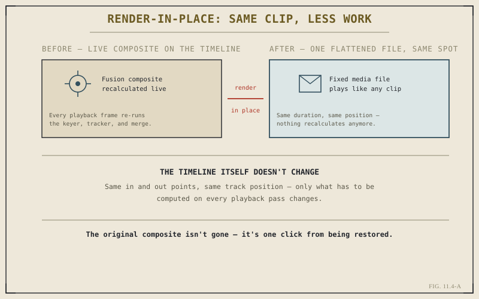

Everything Part XI has covered so far assumes the goal is a full-timeline render — an entire finished project, output start to finish. That's the common case, but it isn't the only one. Sometimes what actually needs rendering is a single clip, or a specific range within a much longer timeline, and treating that narrower need as a full export is real, unnecessary work. This chapter covers the tools built specifically for that smaller scope.
The Problem a Heavy Composite Creates on the Timeline
Recall Chapter 10.6's honest accounting of what a full Fusion composition costs: real playback and render overhead, recalculated every time that section of the timeline plays. A single heavily composited clip — keyed, tracked, layered per Chapter 10.5's build — can meaningfully slow playback across an entire timeline, even though every other clip on it is untouched footage or a simple grade. Rendering the full timeline just to get past that one clip's overhead, every time a preview or a check is needed, is a real, avoidable cost.
What Render-in-Place Actually Does
Render-in-place solves exactly this. It renders a specific clip — commonly a complex Fusion composite, though the tool isn't limited to that case — into a single flattened media file, and swaps that file into the clip's exact position on the timeline, holding the identical duration and edit points. Everything about the clip's place in the cut stays the same; what changes is that Resolve no longer has to recalculate a live composite every time that section plays back, because there's no longer a composite there to recalculate — just an ordinary rendered file, behaving like any other clip.

The original composite isn't gone — it's one click from being restored.
The Original Composite Isn't Lost
A reasonable worry about flattening a complex composite into a fixed file is whether that composite's editability survives the process. It does — render-in-place is reversible, and the underlying Fusion composition remains available to return to if the clip needs further adjustment later. The flattened render is best understood as a working convenience layered on top of the real composite, not a replacement for it. This makes render-in-place a genuinely low-risk tool to reach for, since choosing it doesn't foreclose any option Part X's work already built.
Render-in-place doesn't simplify the composite — it hides its cost during ordinary playback, while keeping the real thing one click away whenever it's actually needed again.
Individual Clip and Range Delivery
A related but distinct need is delivering less than the entire timeline as an actual output file — not for playback performance, but because the actual deliverable genuinely is smaller than the full project. Rendering a specific in-and-out range, or a single selected clip, rather than a whole timeline, fits situations like producing dailies, re-delivering one shot that needed a fix after an otherwise-approved cut, or pulling an isolated piece of a longer project for a separate, smaller purpose. The Deliver page supports this directly, without requiring a duplicate timeline trimmed down just to isolate the section that actually needs rendering.
When This Matters Most: The Fix-and-Redeliver Cycle
Both tools this chapter covers earn their keep most clearly in the same recurring situation: a project that's already been delivered once needs one shot fixed, and re-rendering the entire timeline for a single-clip change is real, wasted time on anything beyond a short project. Range delivery handles the redelivery itself; render-in-place keeps playback smooth while working on the fix in the first place. Chapter 11.6 returns to this exact cycle directly, once handoff and revision requests are the chapter's actual subject.
With full-timeline and narrower, targeted delivery both covered, Chapter 11.5 turns to the specifics of where a render actually goes — broadcast, streaming, and social destinations each carry their own real, distinct requirements, beyond the general codec and container thinking Chapter 11.2 already established.
Key Concepts to Remember
- Render-in-place flattens a heavy composite, like a Fusion build from Part X, into one fixed file at its exact timeline position.
- The original composite remains recoverable — render-in-place is a reversible convenience, not a permanent replacement.
- Individual clip or range delivery renders less than a full timeline, without requiring a separate trimmed-down duplicate.
- Both tools earn their keep most clearly in a fix-and-redeliver cycle, where re-rendering an entire timeline would be real, wasted time.
Cross-References Forward
| → Ch. 11.5 | Delivering for Broadcast, Streaming, and Social — moves from how much of a timeline to render to where it's actually going. |
| → Ch. 11.3 | Revisit presets, the full-timeline delivery workflow this chapter's narrower tools sit alongside. |
| → Ch. 10.6 | Revisit the real performance cost of a full Fusion composite, the exact problem render-in-place is built to solve. |